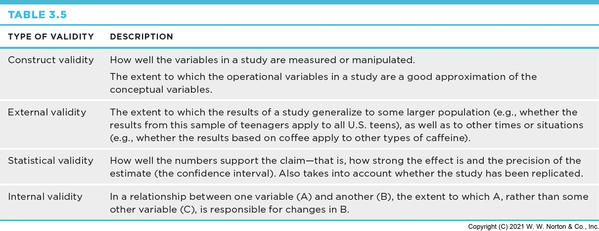
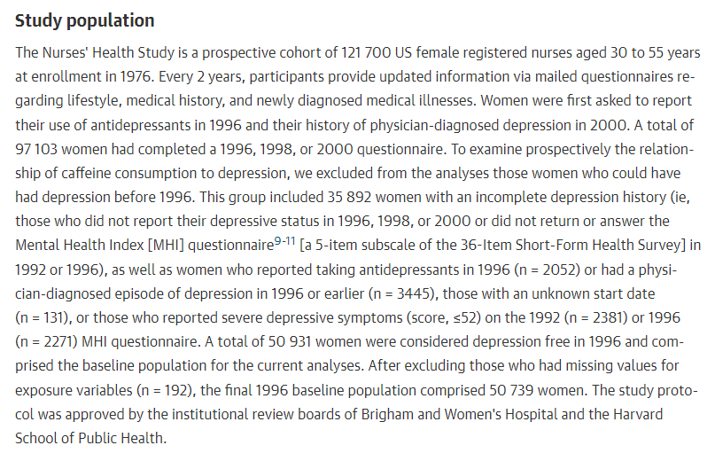
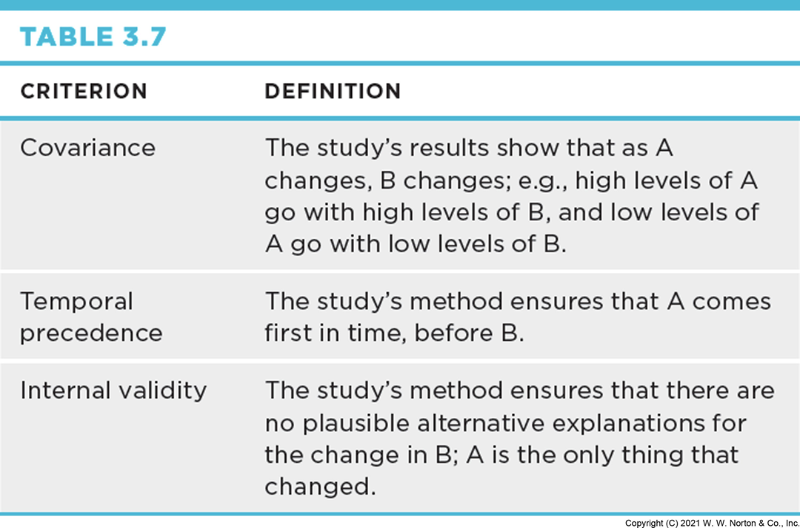
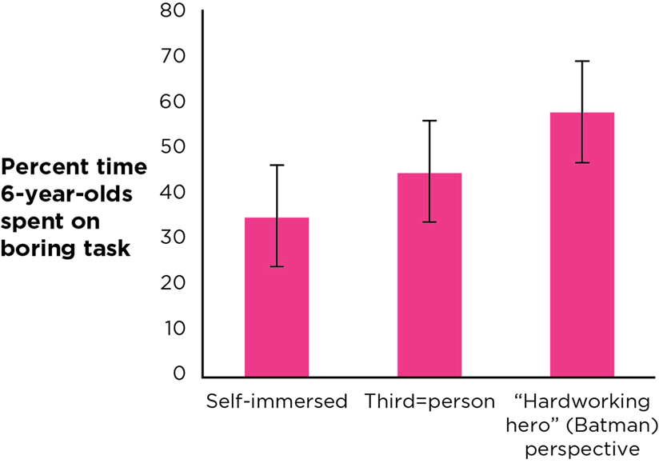

Four Validities: Interrogation Tools for Consumers of Research
Four Validities
Interrogation Tools for Consumers of Research
The Four Big Validities

Construct Validity
Does the measure or manipulation really capture the thing it claims to?
External Validity
Does the result generalize beyond this sample and setting?
Statistical Validity
How precise and reliable is the statistical estimate?
Internal Validity
For causal claims — have other explanations been ruled out?
Interrogating Frequency Claims
“74% of the world smiled yesterday.”
Construct Validity
Does “smiled yesterday” actually capture happiness — or just a momentary facial expression, possibly to a stranger with a clipboard?
External Validity
Does the sample who answered this survey represent “the world,” or just the people who happened to be reachable?
Statistical Validity
Point Estimate, Confidence Interval, Margin of Error
A point estimate (like “74%”) is a single best guess. A confidence interval gives the plausible range around it.
Confidence Interval: Example
39% point estimate, 95% CI: 37.0% – 41.4%
Half the width of the confidence interval — a smaller margin means a more precise (more statistically valid) estimate.
Interrogating Association Claims
Coffee Consumption ↔︎ Depression
Construct Validity
Two Constructs, Two Checks
For an association claim, you check construct validity twice — once for each variable.
Coffee Consumption
Self-reported cups per day? A tracked purchase log? Each captures something slightly different.
Depression

A validated clinical scale? A single self-rating question? The construct validity of this measure shapes how much the association claim is worth.
External Validity
Does this coffee/depression relationship hold for people outside the sample it was studied in — different ages, cultures, caffeine tolerances?
Statistical Validity
Same tools as before — how precise is the estimate of how strongly these two variables are associated?
Interrogating Causal Claims
The Hardest Bar to Clear
Covariance
A and B have to actually move together — if they don’t covary, there’s no relationship to explain causally in the first place.
Temporal Precedence
A has to come before B — not the other way around, and not at the same time in a way that makes order unclear.
Internal Validity

Rule out C — some third variable that could explain the A–B relationship without A actually causing B.
Experiments Can Support Causal Claims
Because a well-designed experiment can establish all three: the researcher creates covariance (by manipulating the IV), controls temporal precedence (IV comes first, DV is measured after), and rules out confounds (random assignment spreads other differences evenly across groups).
Independent and Dependent Variables

The independent variable (IV) is what the researcher manipulates (e.g., type of lessons). The dependent variable (DV) is what gets measured as a result.
Random Assignment
Assigning participants to conditions by chance — the mechanism that makes “rule out other explanations” actually work, by spreading pre-existing differences evenly across groups.
When Causal Claims Are a Mistake
Does It Meet the Three Criteria?
Covariance?
Plausible — more social media use tends to co-occur with more anxiety.
Temporal Precedence?
Harder to establish — does the pressure to respond to texts and posts come before the anxiety, or does anxiety drive more checking?
Internal Validity?
Third variables (sleep, existing mental health, family circumstances) haven’t been ruled out in most of these studies.
This is exactly the pattern that turns a real association into an overreaching causal headline.
Other Validities to Interrogate in Causal Claims
Even once covariance, temporal precedence, and internal validity are addressed, the same Construct, External, and Statistical validity questions from frequency and association claims still apply — a causal claim can fail on any of the four.
Prioritizing Validities
Not every validity matters equally for every claim. For a causal claim, internal validity usually matters most. For a claim about how common something is, statistical and external validity carry more weight.
Key Takeaways
Four Validities
- Every claim — frequency, association, or causal — can be interrogated with the same four validities: Construct, External, Statistical, Internal
- Construct validity asks whether you’re really measuring what you think you’re measuring
- Causal claims carry a stricter bar: covariance, temporal precedence, and ruling out third variables
- Well-designed experiments (manipulated IV, random assignment) are what let you clear that bar